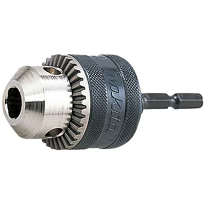

おすすめ ①
マキタ 充電式ドライバドリル DF030DWSP

軽さと扱いやすさを重視したい人向け
このポイントが特にいいところ
軽くて取り回しが良く、狭い場所や細かい作業でもかなり使いやすいです。
最初の1台として選びやすく、現場でも出番が多いのが一番の強みです。
軽くてコンパクトなので、天井作業や狭い場所での作業でもかなり扱いやすいです。
長時間使っても疲れにくく、細かい作業が多い時に特に助かっています。
このドリルはビットタイプのキリやタップが使いやすいです。
通常のキリを使いたい場合は、別売りのチャックがあると便利です。
自分はよく使う下穴の数だけチャックを付けっぱなしで持ち歩いています。
最初の1台なら、これを選んでおけばかなり使いやすいです。
▶ DF030DWSPの価格をAmazonでチェックする良かったところ
- 軽くて疲れにくい
- 狭い場所でも取り回ししやすい
- 初心者にも使いやすい
こんな人におすすめ
- 最初の1台を探している人
- 軽作業や細かい作業が多い人
一緒にあると便利なもの

マキタ ドリルチャックセット品(小) A-44775
よく使う下穴の数だけ付けっぱなしで持ち歩くのに便利です。
M4タップドリル 3機能複合タップ
開孔・タップ・面取りが一体になっていて使いやすいです。
エホート 六角軸スパイラルタップ M4x0.7
細かい作業で使いやすいビットタイプのタップです。
現場でよく持ち歩くもの
剛彩 ビットセット 10本組
よく使うビットをまとめて揃えたい時に便利です。
TOP 電動ドリル用 強軸 ソケットセット
現場で使うソケットをまとめて持ちたい人向けです。
TOP 電動ドリル用 レースウェイソケット 17mm
レースウェイ内の3分ナットを締めるのに使っています。
ビットホルダーセット
よく使うビットをまとめておけます。
マグエックス マグネットパワーベルト 小
マグネットはあったほうが便利で、作業場の4Sも維持しやすいです。